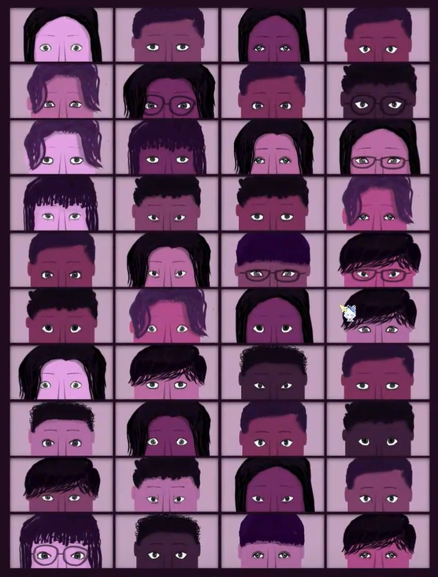

4thElementary
Hey, what grade are you in?
I mean, I guess...
Fourth grade!
Yeah! Wanna meet my classmates?
I mean, I guess...
Sure! But hurry up. Recess
starts soon.
starts soon.
Wow. Thanks, kid. Mind if I ask your class a question?
Who here feels like you belong at the school?
So, like, feeling respected by other students and supported by adults?
So, like, feeling respected by other students and supported by adults?
Those of us in yellow feel like we belong. Why do you ask?
Belonging73%